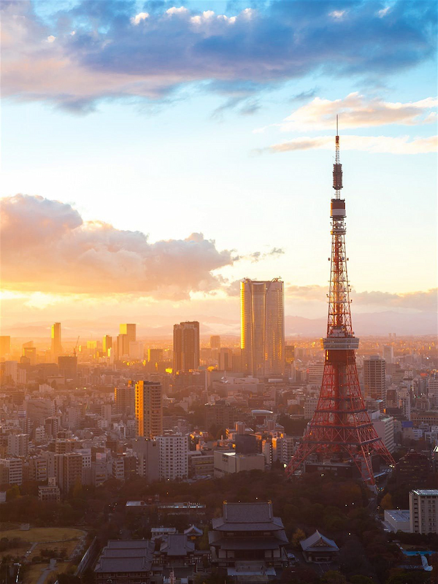
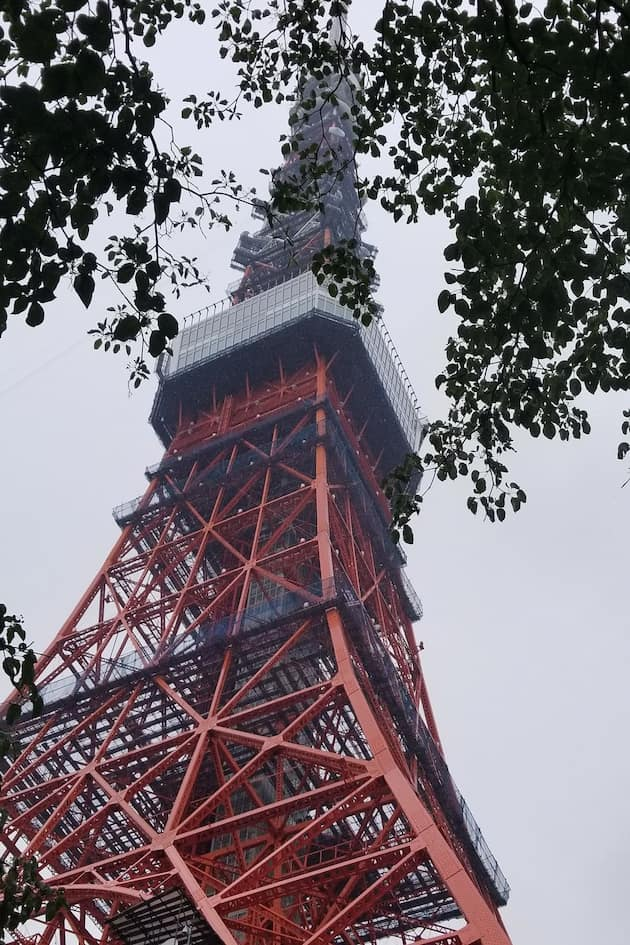

A voir également


La Tour de Tokyo est une tour japonaise de radiodiffusion, inaugurée en 1958 à l'image de la Tour Eiffel, dans l'arrondissement de Minato au sud de la capitale. Elle est l'une des plus hautes tour en métal du monde, avec un point culminant à 333 mètres et deux observatoires sur la ville. Reconnaissable à ses couleurs rouges et blanches, elle s'illumine la nuit selon les saisons et évènements.
La Tour de Tokyo est une tour japonaise de radiodiffusion, inaugurée en 1958 à l'image de la Tour Eiffel, dans l'arrondissement de Minato au sud de la capitale. Elle est l'une des plus hautes tour en métal du monde, avec un point culminant à 333 mètres et deux observatoires sur la ville. Reconnaissable à ses couleurs rouges et blanches, elle s'illumine la nuit selon les saisons et évènements.Avec l'inauguration de la Tokyo SkyTree en 2012, la Tokyo Tower 🗼 semble être comme tombée en désuétude pour de nombreux voyageurs. Or elle peut tout de même recéler un certain intérêt sur lequel nous allons revenir.
On reconnaît la belle à sa robe rouge caractéristique, striée de bandes blanches. De nuit, les illuminations la mettent superbement en valeur. Au pied (80 mètres de côté, tout de même) un centre commercial baptisé "Foot Town" accueille les visiteurs, ainsi que de nombreux restaurants et même un aquarium. En mars 2015, la tour a accueilli le premier parc d'attractions 🎡 officiel One Piece, qui a attiré 100.000 visiteurs dans ses 48 premiers jours d'ouverture.